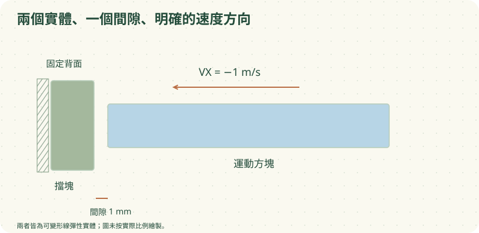

觀念筆記2024 R2
碰撞的那一瞬間，為什麼要看時間？
用簡化碰撞玩懂動能、變形與回彈，再理解 LS-DYNA 的顯式時間步。
文件查證／待實機驗證
開始前
- 知道速度、質量與能量的基本意義
學習目標
- 區分初始速度、接觸與材料反應。
- 分清求解時間步和結果儲存間隔。
- 用能量收支判讀，不只看動畫。
核心觀念：先有速度，再發生接觸
LS-DYNA 可以處理多種分析；此專區先做顯式動力。計算會隨小時間步推進運動，接觸與材料模型決定力、變形和能量交換。Workbench（分析流程平台）的 LS-DYNA 系統和 Explicit Dynamics（顯式動力學）系統不是可以逐項互換的同一個設定表。
圖解碰撞前，先定好方向與接觸對象


⤢ 放大圖解範例：能量在動能與彈簧間交換
下面是單自由度質量＋線性彈簧接觸模型：無摩擦、無阻尼，接觸只在壓縮時作用。它不是下篇三維方塊的等效參數辨識，也不會預測其接觸力或真實變形。
先玩再懂 / ANALYTIC PLAYGROUND
解析／概念碰撞時，能量跑去哪裡？

動能 K—J
彈簧能 U—J
K + U—J
無阻尼、無摩擦的單自由度質量＋壓縮彈簧解析模型。k = 10000 N/m、接觸前間隙 20 mm；與三維方塊案例的材料和尺寸分開。播放經慢放，不是 LS-DYNA 結果。 查看依據 ↗
圖解理想接觸中，能量如何交換？
⤢ 放大圖解求解時間步和輸出間隔，分開記
圖解計算可能跑了很多步，只存下其中一些影格
 ⤢ 放大圖解
⤢ 放大圖解End Time（結束時間）控制要模擬多久；求解時間步控制如何穩定地推進；輸出間隔則控制能留下多少細節。顯式穩定步長與最小元素尺度、材料波速、元素公式及接觸等因素有關，不能單純把動畫影格設密就當成時間步變小。
常見誤解
💡 速度變成兩倍，起始動能變幾倍？
在質量相同時，K = ½mv²，所以動能變成四倍。但實際最大變形與接觸峰值不一定依同一倍率增加。
重點整理
- 幾何、材料、初始條件、接觸與時間設定都要交代。
- 初始速度只給起始狀態，不是全程強迫維持速度。
- 對照能量、變形、接觸與時間歷程一起判讀。
參考來源
以下來源用於技術查證；案例尺寸與初始網格是本教學自訂設定。原廠頁面可能依存取權限要求登入。
- ANSYS LS-DYNA — Setting up a Project ↗2024 R2 · Workbench LS-DYNA 的材料、連接、網格與分析設定。
- ANSYS LS-DYNA — Initial Conditions ↗2024 R2 · 初始平移速度、整個 part 的作用範圍與關鍵字。
- ANSYS LS-DYNA — Accessing Results ↗2024 R2 · 全域能量、接觸力、反力與時間歷程輸出。
- ANSYS LS-DYNA Knowledge — Mass Scaling ↗原廠方法說明，非 2024 R2 介面 · 質量縮放改變慣性，需檢查新增質量與結果敏感度。